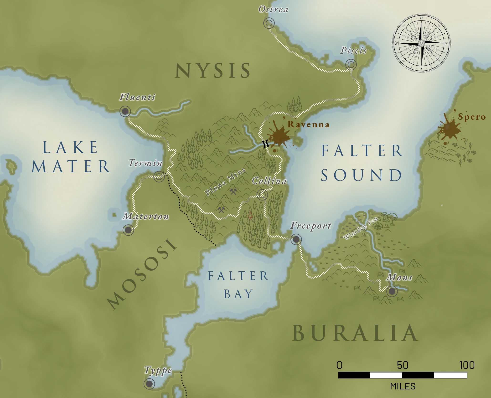

The greater region is graded by how far the settled world reaches: Settled (walls, a watch, a maintained road), Boundary (worked land, no standing authority), Remote (blight, high mountain, or country the Unmaking broke). Full location references live in Atlas; this page holds the country-level politics those places sit inside.
| Roll | Location | Type | Country | Notes |
|---|---|---|---|---|
| 1–7 | Piscis | Settled | Nysis | Fishing, salt, coastal freight |
| 8–14 | Ostrea | Settled | Nysis | Oysters, whaling |
| 15–21 | Collima | Settled | Nysis | Charcoal, timber, crossroads |
| 22–28 | Freeport | Settled | City state | Triumvirate, free-trade port |
| 29–35 | Mons | Settled | Buralia | |
| 36–42 | Termin | Settled | Mososi | Coal |
| 43–49 | Fluenti | Settled | Nysis | Lumber |
| 50–55 | Materton | Settled | Mososi | |
| 56–60 | Oray Hills | Boundary | Nysis | |
| 61–65 | Profunda Forest | Boundary | Nysis | Old-growth deep woods |
| 66–70 | Verday Groves | Boundary | Nysis | |
| 71–75 | Nebula Forest | Boundary | Nysis | Charcoal, hardwoods |
| 76–80 | Suda Forest | Boundary | Nysis / Mososi | |
| 81–85 | Seka Lands | Boundary | Mososi | |
| 86–87 | Malperm Mtns | Remote | Nysis | |
| 88–89 | Pinna Mtns | Remote | Nysis | Iron and coal; the Pinna Mines |
| 90–91 | Polvokovrita Gap | Remote | Mososi | |
| 92–93 | Dronitay Shelf | Remote | Nysis / Mososi | |
| 94–95 | Teeth of Kolonoy | Remote | Mososi | |
| 96–97 | Weirden Fen | Remote | Buralia | Fruit, medicinals, fungus |
| 98–99 | Ravenna | Remote | Nysis | Mana, Conclave presence |
| 100 | Spero | Remote | Buralia | Mana |
Eight further locations have Atlas entries but sit off this oracle, being reached through a neighbour rather than stumbled into: Typpe (Mososi’s capital: rice, tea, flowers), Sveba (the floating town on Lake Mater), Vulkana Caldera (the volcano above Mons), Alneta (the Buralian landing on the eastern shore of Falter Sound, and the last supply before Spero), and Altiplano (Buralia’s capital, weeks south-east in the mesas and off this map entirely). The last three are water: Falter Sound (the salt arm, and the road everything actually uses), Falter Bay (Mososi’s coastline, which reaches nothing) and the Sea of Bees (the open water, and the only way out of the region that nobody owns). Beyond the Sea of Bees gathers what is known of Biel, Ramage and Gelandia, which is a flag code, a manifest and an exchange rate apiece.
The three countries have full entries in the Atlas: Nysis, Mososi and Buralia. What follows here is the short form and the relations between them.
Nysis
The country of Nysis is blessed with mining, large forests, and towns on the Sea of Bees as well as a city on the inland Mater lake. Next to Freeport, it is the richest country in the region. It is also very thinly peopled. Nysis is large, its roads are bad, and the country between its towns is forest, mountain, or blight, so the towns have grown up facing their own problems and have never had much reason to look to anyone else to solve them.
Government by Urbestro
There is no capital and no crown that matters. Each town or city is ruled by a mayor or urbestro, and because the roads are slow and dangerous and no central authority can enforce anything at a distance, the urbestro is not a local official of a national government: the urbestro is the government, entire, within a day’s ride. He raises what levies he can, keeps what watch he pays for, judges what disputes reach him, and answers in practice to nobody. The laws of Nysis favour merchants and guilds, which is another way of saying they favour whoever the urbestro’s own money comes from.
Twice a year the urbestroy meet in a rotating town for a chevayo (a corral) where they settle the things that cannot be settled locally: road upkeep, tolls, bandit seasons, disputes between towns, and the division of the country’s one great shared asset. The chevayo has no power to compel anyone. It works because every urbestro present wants it to keep working, and it keeps working because of Ravenna.
The Ravenna Lease
Nysis does not extract mana. Nysis leases the right to, and the lessee is the Conclave, which holds its monopoly on extraction and refinement by grant of the chevayo and pays a heavy price for it every year. That payment does not go to a treasury. It is divided among the urbestroy, and it goes into their pockets.
This single arrangement explains most of Nysis’s politics. It gives every mayor in the country an income that has nothing to do with his own town and cannot be taken from him by his own people. It gives the urbestroy a reason to keep meeting, keep agreeing, and keep the lease intact. It makes any proposal to open Ravenna to a second party (a rival order, a Buralian concern, an independent scavenger combine) an attack on every mayor at once, and they respond as one, which is the only thing they ever do as one. And it means the blight that cuts the country in half and poisons its ground is, to the men who govern Nysis, the most reliable thing they own.
The size of a town’s share is set by the chevayo and is not public. It is generally understood to be a matter of seniority, leverage, and how much trouble a given urbestro is prepared to make.
Mososi
Mososi’s western reaches are dust and thorn (the Seka Lands, the Polvokovrita Gap, the badland around the Teeth) and the arable ground it does have is terraced, hard-won, and largely given over to the crops it exports rather than the crops it eats. By any reading of its soil, Mososi should be a hungry country and a dependent one.
It is neither, because of the lake. A Verdant source the Unmade built and the Unmaking broke still seeps into the shallows off Materton, and the floating garden beds worked over it produce food at a rate no ordinary water could support: enough to feed Mososi through a bad year and sell the remainder. This is the quiet fact under the country’s whole posture. Mososi cannot be starved, cannot be blockaded, and does not need anyone’s permission to eat, which is why a landlocked state with no port negotiates with Nysis as an equal and can afford a tariff war it is not obviously winning.
It is also mana the Conclave does not control. The order’s monopoly is a grant of the Nyssian chevayo and has no force across the border; Mososi has been asked, more than once and very politely, whether the arrangement might be extended, and has declined without ever quite saying no.
The country of Mososi has no direct sea access but does have coastline on Mater Lake and Falter Bay. It relies heavily on Freeport for trade, especially for rarer goods from areas adjoining the Sea of Bees. The city of Typpe is the jewel in the crown and seat of the Direktor Roberto, who is married to Raina, daughter of the Buralian Emperor, and whose office is a post on paper and a throne in practice. They are well know for their tea, rice, bamboo, and flowers. This is a benevolent dictatorship.
Buralia
Buralia is an empire on the maps and something looser than that on the ground. It is a hundred and forty years old, it began on the grass south-east of everything this Atlas covers, and it is less a territory than an itinerary: the Emperor travels his domain with the whole court behind him, crushes what stands up, leaves a governor holding whatever authority he can enforce, and turns for the heartland every year at the calving. What the Freeport region actually touches is the western march, which the empire has held for forty-seven years and which had a Peace, an order and a seven-year Clearing of its own before it did. The march is not governed so much as billed.
The country here is volcanic and hostile (cinder plain, ash flat, old lava, thorn) and where it finally softens to the north it becomes the Weirden Fen, sixty miles of swamp and standing jungle that is worse. Neither supports a state. What lives out here is perhaps a dozen peoples who do not think of themselves as one people: fen-gatherers, glass-knappers, sulphur men, herders of the high ash, river clans. They trade constantly and several of them have been feuding for longer than anyone has been counting. No imperial official has come to arbitrate any of it within living memory, and none is expected.
Outside the one city, the tribes rule by force and by nothing else: territory is held by whoever can hold it, and passage across it is granted, bought or taken. The single exception is Mons, which holds because violence is forbidden inside a ring of stones and the penalty for breaking that is exclusion from the only market where the fen can get salt, the ash country can get grain, and the glass is worth anything at all. The Gards who keep that Peace are also the order that reads Vulkana Caldera and says when to clear the floor, and they are Wildens: Kroduk’s, the faith Freeport drives underground. The most reliable institution on this frontier is one the Pura Ecclesia would burn if it could reach it.
Buralia’s writ, such as it is, runs along the Freeport road and stops a little way either side of it. What holds the arrangement together is the tribute train that goes east out of Mons every year, counted at both ends and entered in an archive that is the best in the known world and only as old as the empire. As long as the tribute flows, the emperor glows, they say out here. The corollary is why nobody tests it.
Nysis and Mososi
The two countries do not like each other and have not for a long time. Nobody alive can name a war; what there is instead is a border, a tariff, and two centuries of small refusals hardening into policy.
The quarrel is asymmetric, which is why it persists. Nysis has the sea. Mososi does not (its water is Lake Mater and the head of Falter Bay, neither of which reaches the Sea of Bees) so everything Mososi wants from beyond the region arrives through somebody else’s port. Nysis, holding the coast and the Conclave’s mana lease both, regards Mososi as a landlocked supplicant with good tea. Mososi, older, tidier, and governed by a court that has run the same terraces for three hundred years, regards Nysis as a confederation of provincial mayors who got lucky with a poisoned valley.
The Termin tariff
The practical shape of the rivalry is a customs regime at Termin, the only overland crossing that matters, and it is deliberately punishing. Both sides assess duty on nearly everything, in both directions, on schedules revised often enough that no broker can memorise them. Goods are weighed, bonded, inspected, held, and released on a clerk’s timetable. A wagon can wait days. Neither country is trying to stop trade; each is trying to make the other’s exports expensive, and neither will concede first because conceding first is understood to be losing.
The result is that general merchandise does not cross at Termin at all. It goes around by water (down the lake or the bay, out through Freeport, and back in on the far side) and even with the transhipment, the extra miles and a broker’s cut, that route is cheaper and very much faster than the tariff, and it is cheaper even though Freeport assesses full duty on the cargo and bills the hull besides. One Freeport duty and a broker’s cut still comes in under two national tariffs levied in both directions by two posts a day’s walk apart, and it comes in days instead of weeks.
What still crosses overland is what the sea cannot carry economically: things too heavy and too cheap per ton to justify freight and handling twice, and things that cannot wait. Coal east to the Pinna smelters. Pinna iron west into Mososi. Grain in a bad year. Livestock on the hoof. Timber. The traffic at Termin is enormous and almost entirely bulk, which is why the town is loud with wagons and thin on merchants.
What it means for Freeport
Freeport’s neutrality is not a moral position, it is the product. Two rival countries that will not trade directly with each other both need somewhere to trade, and Freeport is the only harbour on this coast deep enough to take the ships and disinterested enough to take the cargo. A great deal of what moves through its docks is Nyssian goods bound for Mososi and Mososi goods bound for Nysis, passing within a hundred yards of each other and paying Freeport for the privilege of not meeting at Termin.
Both countries understand this perfectly well. Neither can do anything about it without talking to the other.
The Church, the Order, and the Lease
Three institutions, one payment, and nobody standing where the whole of it can be seen.
The grade is the church’s invention and needs saying plainly, because it is the hinge. Pure, Prime, Second, Third, Feral is Puritan doctrine, worked out by the Pura Ecclesia to measure how far YRT’s sentence sits on a given person, and it has been adopted as ordinary social vocabulary by a great many people who are not devout at all. That is why an order house in Nysis would be asked for its Acolytes by grade, why the Conclave keeps its seat in Freeport, and why Mososi’s refusal to grade anybody is a position about the country rather than about a sect.
The Circuit
Set the four facts next to each other and the shape is obvious, which is not the same as anyone in it being able to see the shape.
The Conclave extracts and refines at Ravenna under a grant of the chevayo, and pays a heavy lease for the privilege. That lease is divided among five urbestroy and goes into their pockets, and it is the whole of what holds the confederation together. The Conclave’s ability to pay it comes from selling refined mana. Its largest customer by a wide margin is the Pura Ecclesia.
So the church pays the order, the order pays the mayors, and the mayors keep the grant in force. Every Puritan urbestro on that coast draws his private income, at one remove, from the institution his church would not permit to open a house in his town.
Why The Church Cannot Simply End It
It has the leverage and it does not have the instrument.
The Conclave is not in Nysis to be expelled. What is in Nysis is a lease, and a lease can be revoked only by the chevayo, and any proposal to touch Ravenna is an attack on five men’s incomes at once and the one thing they will answer as one. The Ecclesia’s hold over an individual urbestro is real and it stops exactly where his outside money begins.
What the church is doing instead requires breaking nothing. It has spent twelve years putting a mission four hundred miles east at Spero, on ground it rents from the empire, punctually, in silver. It does not need to remove its supplier. It needs to stop being its supplier’s customer, and then the number arriving in Nysis every year gets smaller for reasons no Nyssian is in a position to trace.
Three things sit inside that and none of them are secret. The church that grades a child at the cradle pays ground rent to a Wildens Emperor, and the Gards who keep the Peace at Mons hold the faith that same church would burn if it could reach them. The refinement sites are worked disproportionately by the Touched, the Ecclesia’s stated position is that the Touched should be available for whatever work the Pure assign them, and long exposure to the trade changes the people in it. And the order paying five Puritan mayors will not put a building in their country on account of their church.
Who Is Actually Under Pressure
Not evenly, and not the people who could act on it.
The urbestroy carry all of the exposure and none of the information. Their income is a figure that arrives once a year from an order whose customer they have never audited, and there is no institution in Nysis capable of noticing the trend in time and no procedure whatever for what happens after.
Ostrea and Piscis are held by the same church at the other end of the rope. The abstinence calendar puts a third of the year on fish and makes the Ecclesia the largest single buyer of food in the region, which gives it more practical leverage on those two quays than any urbestro has. They cannot be squeezed harder because they are already fully committed.
Fluenti is the least exposed and behaves like it. It sells timber south into Mososi without asking what grade the buyer’s children are, and it was Fluenti that put forward Five shares, five towns, the only motto ever proposed that mentioned the money.
Collima is the most exposed and the least equipped to see it, being the town that proposed Pure and free and meant it.
So when the payment starts falling, Fluenti has a trade that does not run through the Ecclesia and Collima has a doctrine, and the fracture runs between the two towns that spent an afternoon a hundred and seventy years ago arguing about a motto. There is one honest count of what is behind the mission wall and it is twelve years of flour orders in a victualler’s back room at Alneta. Nobody in Nysis has read it and nobody in Nysis knows it exists.
Collima
See Collima in the Atlas for the full location reference.